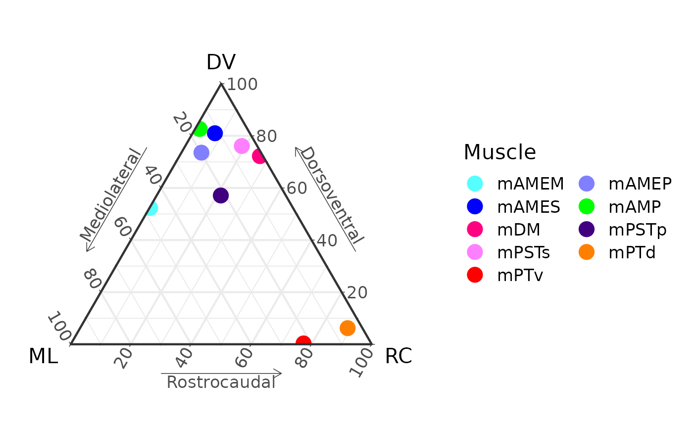
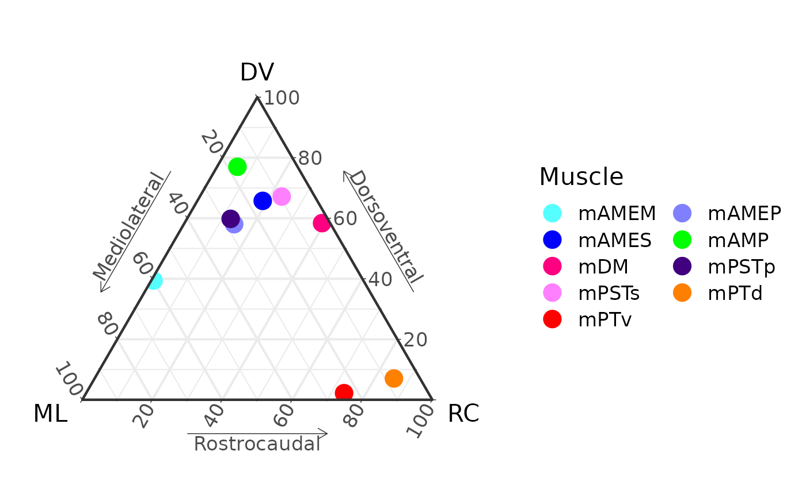
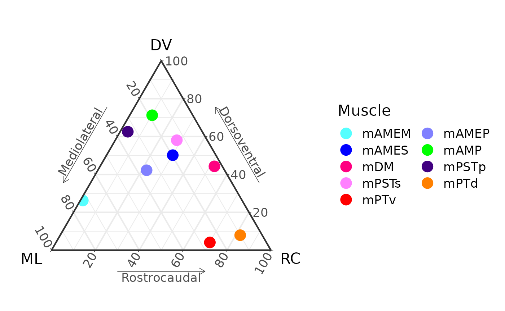

Animate a ternary plot
ternary_animation.RmdTo animate a ternary plot, you need two sets of points to interpolate between (the start and end points). Here we use the Alligator data for the adult AL_008 specimen and the juvenile AL_031 specimen.
Load AL008 and AL031 data, calculate means, and merge into one data.frame.
library(MuscleTernary)
AL_008 <- read_csv(system.file("extdata",
"AL_008_data.csv",
package = "MuscleTernary"),
show_col_types = FALSE) |>
dplyr::select(-side, -force) |>
coords_to_ternary(grouping = c("muscle"))
AL_031 <- read_csv(system.file("extdata",
"AL_031_data.csv",
package = "MuscleTernary"),
show_col_types = FALSE) |>
dplyr::select(-side, -force) |>
coords_to_ternary(grouping = c("muscle"))
M <- left_join(AL_031, AL_008, by = "muscle", suffix = c("_1", "_2")) |>
as.data.frame()
M
#> muscle x_1 y_1 z_1 x_2 y_2 z_2
#> 1 mAMEM 47.482874 52.3157521 0.2013744 72.64625 26.219727 1.134019
#> 2 mAMEP 19.814767 73.5379074 6.6473253 35.56140 42.203549 22.235051
#> 3 mAMES 11.606622 80.9880097 7.4053679 19.65373 50.172370 30.173902
#> 4 mAMP 15.856535 82.6430887 1.5003768 18.49881 71.252822 10.248368
#> 5 mDM 1.046126 72.2162632 26.7376106 3.60419 44.281172 52.114638
#> 6 mPSTp 21.592986 57.0972841 21.3097296 33.96304 62.549390 3.487569
#> 7 mPSTs 5.130132 76.0818728 18.7879948 13.86243 58.065759 28.071813
#> 8 mPTd 4.918202 6.1925587 88.8892394 10.03020 7.917902 82.051895
#> 9 mPTv 22.494155 0.3248712 77.1809739 25.78391 4.092200 70.123890x_1, y_1, and z_1 are the
starting locations in ternary space. x_2, y_2,
and z_2 are the ending locations.
We then interpolate each row into length_out new rows.
Here we make 100 steps in between.
length_out <- 100
D <- list()
for (i in 1:nrow(M)) {
D[[i]] <- interpolate_ternary(M[i, ],
length_out = length_out)
}
D <- do.call(rbind, D)Basically we are making a list of data.frames and then binding them
all together at the end with do.call().
To make the animation, first we make a set of all the plots. Here we
iterate through .frame and make a plot for each. Add to a
list of plots.
P <- list()
for (i in 1:length_out) {
d <- D |> filter(.frame == i)
P[[i]] <- ggtern(d, aes(x = x, y = y, z = z,
color = muscle)) +
geom_point(size = 5) +
muscle_color_map() +
labs( x = "ML",
xarrow = "Mediolateral",
y = "DV",
yarrow = "Dorsoventral",
z = "RC",
zarrow = "Rostrocaudal") +
theme_bw(base_size = 16) +
theme_showarrows() +
guides(colour = guide_legend(override.aes = list(size = 5),
ncol = 2, byrow = TRUE))
}P now is a list of plots (here with a length of 100,
because we used 100 steps). We can plot a few as examples:
P[[1]]
P[[50]]
P[[100]]
Saving the animation
To save the animation to a .gif file, we have to use
additional software: ImageMagick. Installation of ImageMagick is beyond
the scope of this article, but it’s not too difficult.
You have to set options with ani.options differently for
MacOS vs. Windows. Then call saveGIF().
# Set interval to 1/24 s.
ani.options(interval = 1/24)
# For MacOS with ImageMagick installed somewhere on the path
# e.g., using homebrew.
# ani.options(convert = "convert")
# For Windows, install the ImageMagick standalone release:
# (http://www.imagemagick.org/script/binary-releases.php). Use a
# variation of the next line to set the absolute path to convert.exe.
# ani.options(convert = 'C:\\Program Files\\ImageMagick\\convert.exe')
saveGIF({for (i in 1:length_out) print(P[[i]])},
movie.name = "ternary_animation.gif",
ani.width = 800, ani.height = 600)